노트
어휘: 열에너지와 열을 설명하는 데 사용되는 다음 어휘를 기록하세요. 학습 활동을 완료하면서 어휘에 관련된 정의와 핵심 용어를 기입하세요. 단원이 끝날 때 이 용어들을 얼마나 잘 이해하고 있는지 검토하세요.
- 열에너지
- 열
- 온도
- 분자 운동론(kinetic molecular theory)
- 비열용량(specific heat capacity)
- 융해 잠열(latent heat of fusion)
- 기화 잠열(latent heat of evaporation)
- 열 전달
어느 얼음이 더 빨리 녹을까요?
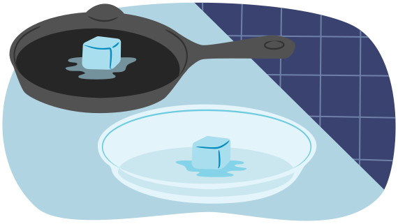
실온에 놓인 두 개의 쟁반을 생각해 보세요 — 하나는 금속, 다른 하나는 플라스틱입니다.
만져보면, 하나가 다른 것보다 더 차갑게 느껴질 것입니다. 어느 것이 그런지, 그리고 그 이유가 무엇인지 생각해 보세요.
거의 같은 질량을 가진 두 개의 얼음을 상상해 보세요. 같은 온도에 있습니다.
하나는 금속 쟁반 위에, 다른 하나는 플라스틱 쟁반 위에 놓입니다. 금속 쟁반과 플라스틱 쟁반 모두 실온에 있습니다.
어느 것이 더 빨리 녹을 것이라고 생각하나요, 그리고 그 이유는? 이 학습 활동이 끝날 때 이 상황을 다시 살펴볼 것입니다.

열에너지
열에너지의 이동 효과는 우리 주변 어디에서나 발견할 수 있습니다. 지역 바람은 태양에 의한 지구의 불균일한 가열로 인해 발생합니다. 큰 수역은 열에너지를 흡수하고 방출하여 기후를 조절하는 데 도움을 줍니다. 그 결과로 생기는 날씨 패턴은 우리가 집을 짓는 방식, 입는 옷의 종류, 그리고 한 곳에서 다른 곳으로 이동하는 방법을 결정합니다. 오늘날 사용되는 많은 기술은 어떤 방식으로든 열에너지를 생성합니다. 예를 들어, 컴퓨터는 사용 시 뜨거워지며 냉각을 위해 팬이 필요할 수 있습니다. 자동차는 엔진이 제대로 작동하도록 냉각 시스템이 필요합니다. 냉장고와 에어컨은 사실상 열 펌프(heat pump)입니다.
캐나다에서는 에너지 요구의 상당 부분이 건물 내의 공기를 가열하거나 냉각하고, 가정과 직장에서 사용하는 온수를 위해 필요합니다. 이는 우리에게 다양한 문제를 제시합니다. 이 학습 활동에서는 열과 열에너지와 관련된 용어를 살펴봅니다. 또한 열에너지와 관련된 많은 응용 사례도 다룹니다.
입자 운동과 열에너지
열에너지와 열의 개념을 더 잘 이해하기 위해, 먼저 물질의 분자 운동론을 복습해야 합니다. 이 이론은 다음과 같이 요약할 수 있습니다:
- 모든 물질은 끊임없이 움직이는 입자, 원자 또는 분자(원자 집단)로 구성되어 있습니다.
- 이 원자들은 원자의 전하(전자와 양성자) 때문에 서로에게 전기력을 가하며, 이로 인해 일정한 거리를 유지합니다. 너무 가까이 오면 서로 반발합니다.
- 입자 간의 전기력의 세기는 거리가 멀어질수록 약해집니다. 물질의 상태를 결정하는 것은 전기력의 세기입니다.
물질의 세 가지 상태에 대한 요약은 다음 표와 다이어그램에 나와 있습니다.
| 기체(Gas) | 액체(Liquid) | 고체(Solid) |
|---|---|---|
|
입자들은 서로 약하게만 끌리며 사이에 많은 공간이 있어 자유롭게 움직일 수 있습니다. 기체는 다음 다이어그램에서 보여주듯이 용기를 채우도록 팽창합니다. 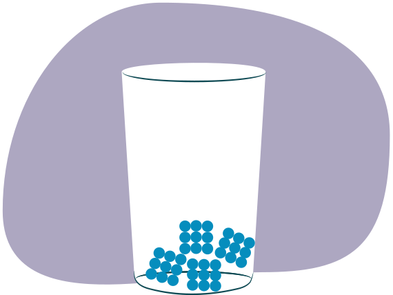 |
액체의 입자들은 기체 입자보다 더 강한 인력으로 결합되어 있지만, 여전히 자유롭게 움직일 수 있습니다. 액체는 다음 다이어그램에서 보여주듯이 부피를 변화시키지 않으면서 용기의 모양을 취합니다. 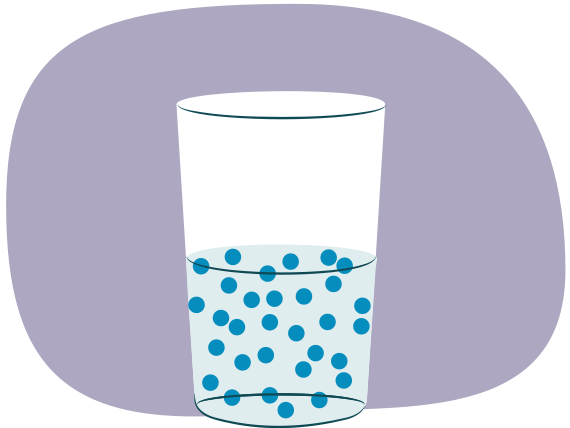 |
고체에서 입자들은 서로 강하게 끌리며 매우 조직적으로 배열되어 있습니다. 강한 전기력이 입자들을 제자리에 고정시키므로, 입자들은 진동만 할 수 있습니다. 이것이 다음 다이어그램에서 보여주듯이 고체에 단단한 구조를 부여합니다. 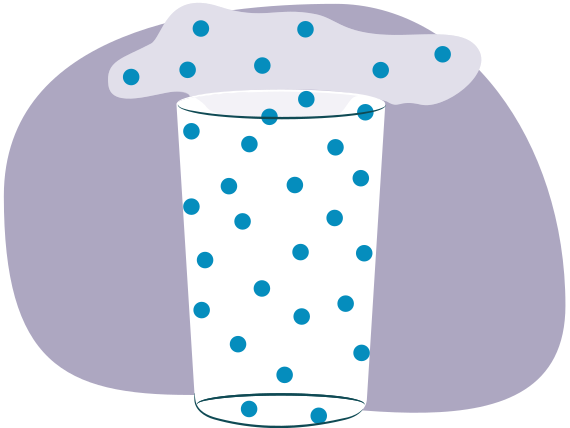 |
열에너지, 열, 그리고 온도
일상생활에서 "열에너지," "열," 그리고 "온도"라는 용어는 종종 혼용되지만, 각 용어는 서로 다른 특정한 것을 지칭합니다. 각 용어를 눌러 차이점을 알아보세요.
직접 해보기!
20 °C에서 200 g의 철 시료와 역시 20 °C에서 800 g의 철 시료를 생각해 보세요.
어느 것이 더 많은 열에너지를 가지고 있나요? 왜 그런가요?
온도는 동일하지만, 800 g 시료가 더 많은 열에너지를 가지고 있습니다. 질량이 더 크기 때문입니다.
열 전달 방법
열은 뜨거운 물체에서 차가운 물체로 전달됩니다. 열이 실제로 어떻게 한 물체에서 제거되어 다른 물체에 추가되는 걸까요? 알아봅시다.
이 학습 활동에서 탐구할 세 가지 유형의 열 전달이 있습니다:
- 대류
- 복사
- 전도
대류
대류는 대류 순환(convection current)이라고 하는 원형 경로를 따라 입자가 흐르면서 열을 전달합니다. 더 따뜻한 입자들은 느리게 움직이는 차가운 입자들보다 빠르게 움직이기 때문에 실제로 열에너지를 함께 가지고 갑니다. 이것은 열에너지를 감소시키며 열 전달을 나타냅니다.
다음 이미지는 가열되는 냄비 안 물의 대류 순환을 보여줍니다. 가열 요소에 가장 가까운 물이 상승하고, 식으면서 다시 내려옵니다.
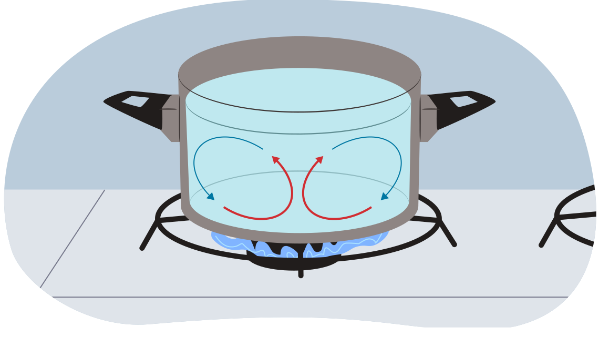
다음 다이어그램은 공기 중의 대류 순환을 보여줍니다. 육지가 공기를 데우고, 따뜻한 공기가 상승합니다. 바다로부터 차가운 공기가 이동해 들어옵니다.
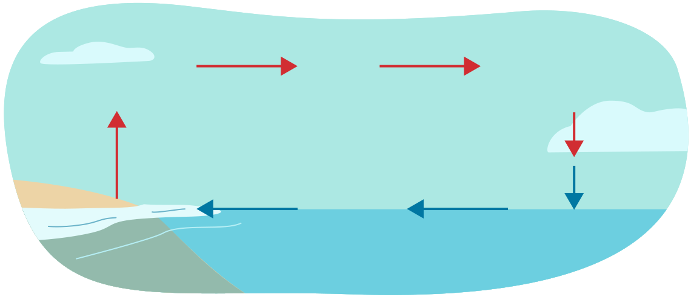
히터도 대류 순환을 이용하여 작동합니다. 큰 방의 한쪽 벽에 히터를 놓는다고 상상해 보세요. 히터가 주변 공기를 상당히 따뜻하게 하지만, 팬이 없다고 가정합니다. 히터 근처의 공기가 따뜻해지면, 입자들이 더 빨리 움직이며 퍼집니다. 이것은 따뜻한 공기를 덜 조밀하게 만들어 상승하게 합니다. 위로 올라가면서, 더 차가운 공기가 그 아래 공간으로 흘러 들어옵니다. 이 과정이 계속되면서 대류 순환이 형성되고 뜨거운 공기가 방 전체에 퍼집니다.
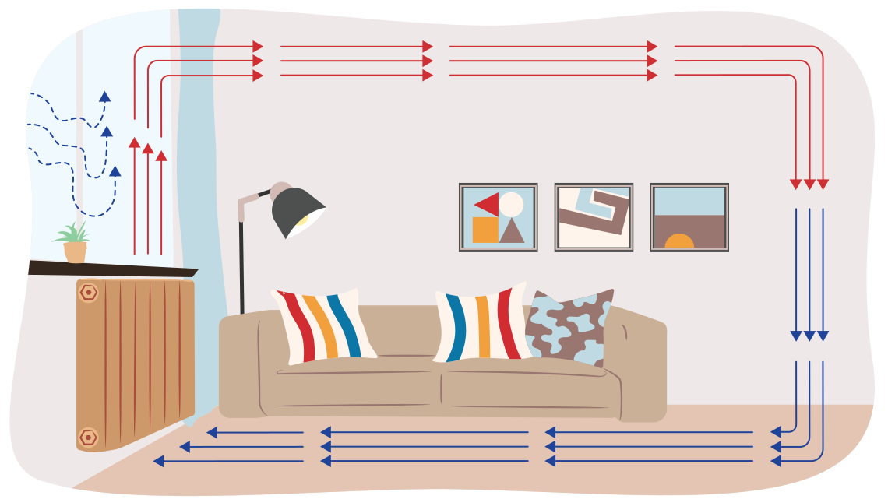
복사
태양의 에너지는 입자에 의해 운반되지 않고, 복사의 형태로 우주의 진공을 통해 전달됩니다.
모든 물체는 전자기파를 방출하여 열에너지를 잃습니다. 때때로 이 전자기파는 가시적이며 물체가 태양처럼 또는 매우 뜨거운 강철처럼 밝게 빛납니다. 참고: 알루미늄은 660 °C에서 녹으며, 이는 금속이 빛나기 시작하는 온도 바로 아래입니다. 따라서 뜨거운 알루미늄을 다룰 때(용접 시)는 화상에 주의하세요.
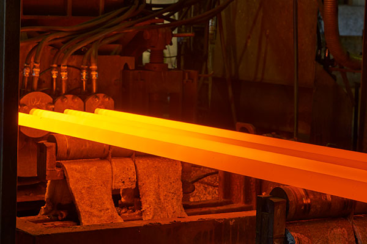
다른 경우에는 따뜻한 물체가 마이크로파, 적외선, X선 등의 비가시적 형태의 전자기 복사를 방출합니다. 보통 뜨거운 물체는 적외선으로 인해 열을 잃습니다. 이 과정을 때때로 열복사라고 합니다.
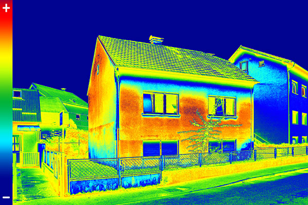
전도
서로 다른 온도를 가진 두 물체가 접촉할 때, 더 따뜻한 물체의 열이 더 차가운 물체로 전달됩니다. 예를 들어, 이 사진에서 사람의 손은 얼음보다 더 따뜻합니다. 손의 열이 얼음으로 전달되어 얼음을 따뜻하게 합니다. 손은 얼음에 열을 잃기 때문에 차갑게 느끼기 시작합니다.
두 물체를 접촉시키면, 뜨거운 물체의 빠르게 움직이는 입자가 차가운 물체의 느리게 움직이는 입자와 충돌합니다. 이 충돌은 느린 입자들의 속도를 높여 운동 에너지를 얻게 하고, 빠른 입자들의 속도를 낮추어 운동 에너지를 잃게 합니다. 그 결과 뜨거운 물체는 차가워지고 차가운 물체는 따뜻해집니다. 결국 두 시료는 공통 온도에 도달하고 열은 더 이상 한쪽에서 다른 쪽으로 전달되지 않습니다.
다음 다이어그램에서 보여주듯이 어떤 물체는 다른 물체보다 열을 더 잘 전도합니다. 예를 들어, 알루미늄은 물보다 더 좋은 전도체입니다.
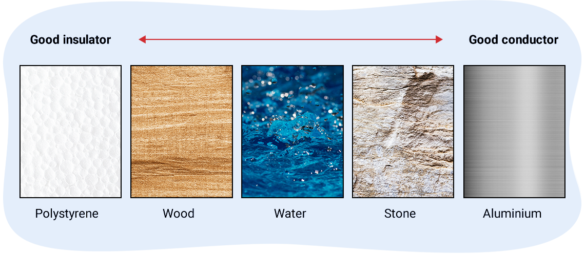
노트
세 가지 열 전달 방법에 대해 배운 것을 사용하여 노트에 다음 상황들을 설명하세요.
1. 왜 금속 냄비와 프라이팬에는 종종 플라스틱이나 나무 손잡이가 있나요?
전도로 인해 손잡이가 뜨거워집니다. 열을 잘 전도하지 않는 재료로 손잡이를 만들면, 뜨거워지는 데 훨씬 더 오래 걸리며 손잡이를 만졌을 때 화상을 입지 않을 것입니다.
2. 왜 주전자의 수증기는 위로 올라가나요?
수증기는 대류 순환으로 인해 올라갑니다. 뜨거운 수증기는 주변의 차가운 공기보다 밀도가 낮아 위로 올라갑니다.
3. 왜 가운데에 금속 꼬치를 꽂은 감자는 오븐에서 금속 꼬치 없이 굽는 것보다 더 빨리 익나요?
전도로 인해 금속 꼬치가 뜨거워집니다. 뜨거운 꼬치가 감자 내부를 익히는 데 도움을 줍니다.
4. 왜 난방 통풍구는 보통 천장이 아닌 바닥에 위치하나요?
난방 통풍구는 주변 공기를 가열하여 대류 순환을 만듭니다. 따뜻한 공기가 올라가 방을 통해 이동합니다. 통풍구가 천장에 있으면 따뜻한 공기가 천장 근처에만 머물러 방을 효율적으로 가열하지 못합니다.
열 전달 계산
열에너지가 따뜻한 물체나 물질에서 차가운 물체나 물질로 전달될 때, 두 가지 중 하나가 일어날 수 있습니다: 물체나 물질의 온도가 변하거나 상태 변화가 일어날 수 있습니다. 이 학습 활동의 이 부분에서는 온도 변화에 초점을 맞출 것입니다.
노트
다음 다이어그램을 살펴보고 노트에 질문에 답하세요.
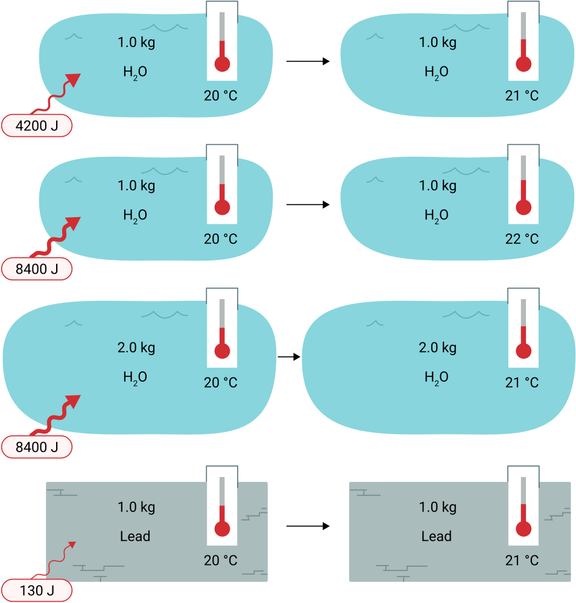
1. 1.0 kg의 물의 온도를 1 °C 올리는 데 얼마나 많은 열이 필요한가요?
4200 J
2. 1.0 kg의 납의 온도를 1 °C 올리는 데 얼마나 많은 열이 필요한가요?
130 J
납의 온도를 같은 양만큼 올리는 데 훨씬 적은 열이 필요합니다. 이것은 비열용량이라고 하는 물질의 특성 때문입니다.
비열용량
비열용량 c는 물질 1 kg 시료의 온도를 1 °C 올리는 데 필요한 에너지의 양을 나타냅니다.
비열용량 c의 단위는 입니다.
킬로그램과 섭씨 모두 분수의 아래에 있다는 점에 유의하세요. 이 단위는 J/(kg°C)로도 쓸 수 있으며, 분모에 괄호를 포함해야 합니다.
비열용량은 서로 다른 원소와 물질마다 다릅니다. 예를 들어, 모든 납은 같은 비열용량을 가집니다. 비열용량의 정의를 검토하고 다이어그램을 다시 살펴보세요.
직접 해보기!
방금 탐구한 다이어그램을 기반으로 물과 납의 비열용량을 말해 보세요.
Cwater = ?
4200 J/(kg°C). (1 kg의 물의 온도를 1 °C 올리는 데 4200 J의 에너지가 필요합니다.)
Clead = ?
130 J/(kg°C). (1 kg의 납의 온도를 1 °C 올리는 데 130 J의 에너지가 필요합니다.)
다음 표는 여러 물질의 비열용량을 나열합니다.
물은 다른 물질에 비해 상대적으로 높은 비열용량을 가지고 있음에 주목하세요.
| 물질 | 비열용량 (c) (J/(kg°C)) |
|---|---|
| 납 | 130 |
| 구리 | 390 |
| 알루미늄 | 900 |
| 얼음 | 2,100 |
| 물 | 4,200 |
직접 해보기!
비열용량에 대한 이해를 확인하기 위해 다음 문제를 풀어 보세요.
열량
다음은 비열용량을 물질의 온도를 변화시키는 데 필요한 열량과 관련짓는 공식입니다.
공식
열량:
여기서 Q는 열량(J), m은 물질의 질량(kg), c는 비열용량(J/(kg°C)), 그리고 ΔT는 온도 변화 ΔT = Tfinal - Tinitial(°C)입니다.
비열용량의 단위를 살펴보면, 비열용량(c)에 킬로그램 단위의 질량(m)과 섭씨 온도 단위의 온도 변화(ΔT = Tfinal – Tinitial)를 곱하면 물체가 얻거나 잃은 열량(Q)을 줄 단위로 얻을 수 있음을 알 수 있습니다.
예제: 열량
1.6 kg의 액체 물 시료를 핫 플레이트 위에 놓고 25 °C에서 65 °C로 가열합니다. 물에 얼마나 많은 열이 추가되었나요?
주어진 값:
미지수:
방정식:
풀이:
결론:
물에 270,000 J의 열이 추가되었다. (c, 질량, 온도 모두 유효숫자가 2개이므로 유효숫자 2개로 반올림했다.)
열 교환의 원리
앞서 언급했듯이, 한 물질이 다른 물질과 접촉하면 열이 더 따뜻한 물질에서 더 차가운 물질로 이동합니다. 그러나 에너지 보존 법칙에 따르면, 한 물질이 잃은 에너지의 양은 다른 물질이 얻은 에너지의 양과 같아야 합니다.
열이 한 물질에서 다른 물질로 전달될 때, 더 뜨거운 물체가 잃은 열의 양은 더 차가운 물체가 얻은 열의 양과 같습니다. 다음 다이어그램에서 보여줍니다.
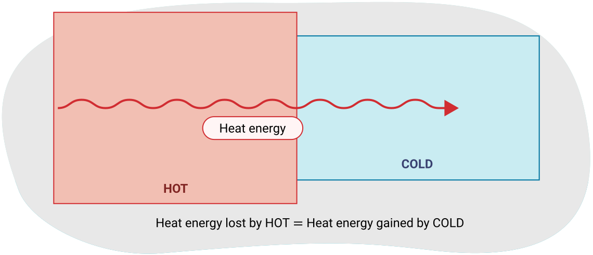
공식
열 교환의 원리를 수식으로 표현하면:
열 교환의 원리는 서로 다른 초기 온도를 가진 두 물질을 섞었을 때의 최종 온도를 결정하는 데 유용합니다.
예제 1: 열 교환의 원리
80.0 °C에서 0.30 kg의 황동(c = 380 J/(kg°C)) 조각을 20.0 °C에서 0.20 kg의 물에 담급니다. 주변으로의 열 손실이 없다고 가정할 때, 황동과 물의 최종 온도를 구하세요.
참고: 다음과 같은 표에 주어진 정보를 정리하면 도움이 됩니다. Qlost는 항상 더 높은 온도에서 시작하는 물질입니다. 혼합물의 최종 온도는 항상 같습니다. 참고: 공유하는 최종 온도가 미지수입니다.
| 주어진 값: | Qlost (황동) | Qgained (물) |
|---|---|---|
| m | 0.30 kg | 0.20 kg |
| c | 380 J/(kg°C) | 4200 J/(kg°C) |
| Ti | 80.0 °C | 20.0 °C |
| Tf | ? | ? |
두 Tf 값은 물과 황동의 혼합물이 평형 온도에 도달하므로 같을 것임을 기억하세요.
주어진 값:
위의 값 표.
미지수:
방정식:
풀이:
동류항을 모으면,
결론:
황동과 물 혼합물의 최종 온도는 27 °C이다.
예제 2: 열 교환의 원리
90.0 °C 온도의 철 블록(c = 450 J/(kg°C))을 18 °C 온도의 200.0 g의 물에 넣습니다. 혼합물의 최종 온도가 28 °C에서 평형에 도달합니다. 주변으로의 열 손실이 없다고 가정할 때, 철의 질량을 구하세요.
철이 가장 높은 온도를 가지므로 Qlost가 됩니다. 앞에서 설명한 것처럼, 표를 설정하는 것이 항상 도움이 됩니다. 아래 표를 알려진 값과 미지수로 채우세요.
| Qlost (철) | Qgained (물) | |
|---|---|---|
| m | ? | 0.2000 kg |
| c | 450 J/(kg°C) | 4200 J/(kg°C) |
| Ti | 90.0 °C | 18 °C |
| Tf | 28 °C | 28 °C |
완료한 후, 미지수를 풀어보세요.
주어진 값:
위의 값 표.
미지수:
방정식:
풀이:
결론:
철의 질량은 0.30 kg이다. (유효숫자 2개)
상태 변화와 잠열
물과 같은 물질을 고체 상태(얼음)에서 계속 가열하면, 열을 흡수하면서 먼저 온도가 올라갑니다. 결국 녹는점(0 °C)에 도달하고 고체가 액체로 변하기 시작합니다. 이때 추가된 열이 물 입자의 퍼텐셜 에너지를 증가시키는 데 사용되기 때문에 온도 상승이 멈춥니다.
다음 그래프에서 특정 지점에서 선이 수평인 것에 주목하세요. 이는 녹음과 증발(상태 변화) 동안 온도가 일정함을 나타냅니다.
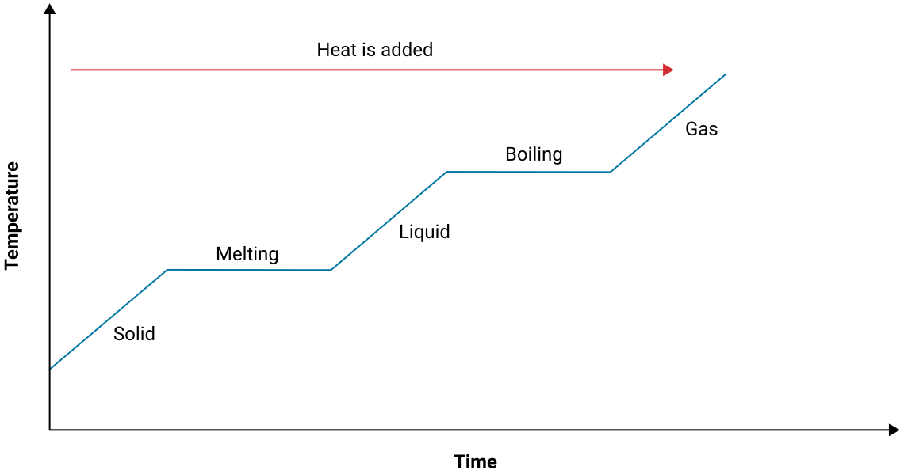
냉각 곡선
물과 같은 물질을 냉각시키면, 기체의 온도가 먼저 감소하는 유사한 과정을 거칩니다. 그런 다음 응축점에 도달하여 기체가 액체로 변하고, 열이 제거되고 있음에도 불구하고 온도가 일정하게 유지됩니다. 모든 기체가 액체가 되면, 액체의 온도는 어는점에 도달할 때까지 감소합니다. 모든 액체가 고체로 얼 때까지 온도는 다시 일정하게 유지됩니다. 그 후, 열이 제거되면 고체는 다음 다이어그램에서 보여주듯이 계속 냉각됩니다.
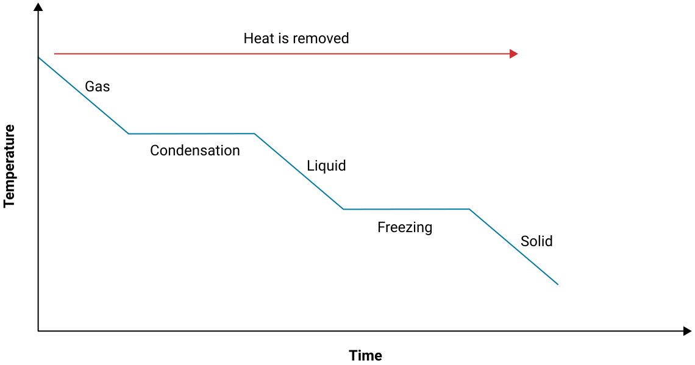
녹는점과 어는점은 같은 온도에서 발생하며, 차이점은 물질에 열이 추가되는지 제거되는지뿐임에 유의해야 합니다. 끓음과 응축에서도 마찬가지입니다. 이것은 물질을 녹이거나 끓일 때 열이 저장되고, 물질을 응축시키거나 얼릴 때 열이 방출됨을 의미합니다. 이러한 유형의 열은 상태 변화 중에 온도가 변하지 않기 때문에 잠열이라고 합니다.
잠열
- 잠열: 상태 변화 중에 물질에 추가하거나 제거해야 하는 열의 양.
- 융해 잠열 (Lf): 물질 1 kg을 녹이거나 얼리는 데 필요한 에너지.
- 기화 잠열 (LV): 물질 1 kg을 끓이거나 응축시키는 데 필요한 에너지.
잠열은 비열용량과 유사하게 물질의 특성입니다. 각 물질은 고유한 잠열을 가집니다. 일부 값은 다음 표에서 확인할 수 있습니다. 필요한 경우 문제에 값이 제공됩니다.
공식
물질을 녹이거나 얼리는 데 필요한 열량을 구하려면 다음 공식을 사용하세요:
물질을 끓이거나 응축시키는 데 필요한 열량을 구하려면 다음 공식을 사용하세요:
다양한 물질의 잠열
| 물질 | (J/kg) | 녹는점/어는점 (°C) | (J/kg) | 끓는점/응축점 (°C) |
|---|---|---|---|---|
| 물/얼음 | 3.3 x 105 | 0 | 2.3 x 106 | 100 |
| 구리 | 2.1 x 105 | 1,085 | 4.7 x 106 | 2,560 |
| 알루미늄 | 9.0 x 104 | 659 | 1.1 x 107 | 1,509 |
| 납 | 2.3 x 104 | 327 | 8.7 x 105 | 1,780 |
예제 1: 잠열
0.200 kg의 얼음을 –20.0 °C에서 30.0 °C까지 가열하는 데 필요한 총 열량은 얼마인가?
cice = 2,100 J/(kg°C), cwater = 4,200J/(kg°C)
이를 위해 세 가지 다른 열량이 필요합니다. 먼저, 얼음을 –20.0 °C에서 0.0 °C로 가열해야 합니다(이를 Qsolid라고 부릅니다). 그런 다음, 0.0 °C에서 얼음을 녹여야 합니다(이를 Qmelt라고 부릅니다). 그런 다음, 액체 물의 온도를 0.0 °C에서 30.0 °C로 올려야 합니다(이를 Qliquid라고 부릅니다). 세 가지 열량을 모두 더해야 총 열량을 구할 수 있습니다.
주어진 값:
얼음을 녹이므로 융해 잠열도 필요합니다. 위의 표를 참조하면,
미지수:
방정식:
풀이:
결론:
얼음을 30.0 °C까지 가열하는 데 1.0×105 J이 필요하다. (유효숫자 2개를 나타내기 위해 과학적 표기법으로 답해야 한다. 열의 대부분이 실제 녹음에만 사용되었음에 유의하라.)
잠열의 응용
이전 예제에서 필요한 에너지의 대부분이 얼음을 녹이는 데 사용되었음에 주목하세요. 융해 잠열과 기화 잠열은 물의 비열용량보다 훨씬 큽니다. 이 때문에 큰 수역은 조절 효과를 가집니다. 겨울에는 물이 얼기 위해 열이 제거되어야 합니다. 이 여분의 열은 공기 중으로 이동하여 물 근처의 지역을 더 따뜻하게 유지합니다.
봄에는 물을 녹이기 위해 추가 열이 가해져야 하므로 호수 주변의 공기 온도가 더 시원하게 유지됩니다. 그래서 봄에 큰 호수 주변에서는 눈이 녹았지만 호수는 여전히 얼어 있을 수 있습니다.
이 효과는 작물을 보호하는 데에도 사용될 수 있습니다. 온도가 영하 또는 약간 아래로 떨어지면 식물에 물을 뿌릴 수 있습니다. 식물 위의 물이 얼면 열이 제거되어야 합니다. 제거된 열의 일부가 식물에 흡수되어 주변 공기보다 약간 따뜻하게 유지합니다.
융해와 기화는 한꺼번에가 아닌 시간에 걸쳐 일어나는 과정입니다. 요리할 때 물이 끓기 시작하면 즉시 모두 수증기로 변하지 않는 것을 관찰하여 이를 확인할 수 있습니다.
예제 2: 잠열
2.4 × 106 J의 열이 20.0 °C에서 4.00 kg의 물에 가해졌을 때, 얼마나 많은 수증기가 생성되나요?
이를 위해 두 가지 다른 열량이 필요합니다. Qliquid는 물을 20°C에서 100°C로 가열하는 데 사용되고, Qv는 물을 수증기로 변환하는 데 사용됩니다.
주어진 값:
물리적 특성
미지수:
방정식:
풀이:
문제에서 모든 물이 수증기로 변하지는 않을 것임을 알 수 있습니다. 변수를 할당하고 대입할 때 주의해야 합니다.
결론:
따라서 0.46 kg의 수증기가 생성된다. (나머지 3.54 kg은 여전히 액체 상태이다.)
예제 3: 열 교환의 원리
–9.00 °C의 냉동실에서 꺼낸 50.0 g의 얼음을 95.0 °C에서 150.0 g의 물이 담긴 폴리스티렌 컵에 직접 넣습니다. 컵과 주변으로의 열 손실을 무시하고 물의 최종 온도를 계산하세요.
이 문제를 풀기 위해 잠열과 평형 온도에 대한 지식을 결합하세요.
물은 더 높은 온도에서 시작하므로 Qlost가 됩니다. 얼음은 0도까지 데워지고(Qsolid), 녹고(Qf), 평형 온도까지 데워집니다(Qliquid). 이것이 얻은 열이 됩니다.
주어진 값:
녹은 얼음의 경우,
뜨거운 물의 경우,
미지수:
방정식:
풀이:
다양한 접근 방법이 가능하지만, 정리를 위해 대입 전에 잃은 열과 얻은 열을 각각 먼저 간소화합니다.
이 계산의 세 번째 부분에서는 얼음의 질량을 물의 비열용량과 결합해야 하는데, 이 시점에서 물은 이미 녹았기 때문입니다.
잃은 열과 얻은 열을 결합하면,
동류항을 모으면,
결론:
혼합물은 5.0×101 °C에서 평형에 도달할 것이다. (유효숫자가 2개임을 나타내기 위해 과학적 표기법이 필요하다.)
응용: 냉난방
열에너지를 사용하거나 제어하는 많은 장치와 시스템이 있습니다. 이러한 응용 중 많은 것들이 가정과 직장에서의 냉난방 비용을 줄이는 데 도움이 될 수 있습니다. 이 섹션에서는 이러한 응용 중 몇 가지를 탐구합니다.

이해력 연결하기
이 학습 활동에서 처음 시작한 실험을 다시 살펴봅시다. 금속 쟁반은 플라스틱 쟁반보다 만졌을 때 더 차갑게 느껴졌을 것입니다. 이것은 금속 쟁반이 플라스틱 쟁반보다 더 좋은 전도체이기 때문입니다. 손에서 열을 전도시킵니다. 따라서 손이 더 차갑게 느껴집니다.
플라스틱 쟁반 위의 얼음이 만졌을 때 더 따뜻하게 느껴지므로 더 빨리 녹을 것이라는 오해가 있습니다. 그러나 이전 예제에서 언급한 것과 유사한 설명으로, 금속 쟁반은 더 좋은 전도체이며 환경에서 얼음으로 열을 전도합니다. 따라서 더 빨리 녹습니다. 사실 플라스틱은 매우 좋은 단열체이므로 플라스틱 쟁반 위의 얼음은 그만큼 빨리 녹지 않을 것입니다.
탐구해 보기!
다음 영상은 온도에 대한 오해를 설명합니다.
또한 배운 또 다른 개념은 열량과 잠열입니다. 이 학습 활동에서 배운 것으로 일상생활에서 일어나는 현상을 설명할 수 있습니다. 이러한 개념에 대한 지식을 가지는 것이 유익할 것입니다.
노트
다음은 두 가지 예시입니다:
- 식당의 조리사가 주전자에서 물을 끓이고 있습니다. 주전자 주둥이에서 나오는 수증기로 인한 화상이 같은 질량의 끓는 물을 피부에 부었을 때의 화상보다 왜 더 심각한지 설명하세요.
- 음식을 쿨러에 보관하기 위해 10 kg의 얼음과 10 kg의 얼음처럼 차가운 물 중 어느 것이 더 좋은가요? 답을 설명하세요.
노트에서 메모를 검토하거나 추가 조사를 하여 이 예시들에 대한 설명을 개발하세요.
복습
이 단원의 어휘를 검토하고 업데이트하세요. 용어와 그 사용법을 자신의 말로 설명하는 문단을 작성하세요. 응축 가스 보일러나 바람이 불면 젖은 얼굴이 차가운 이유와 같은 실생활 예시를 사용하세요.
자기 점검 퀴즈
이해도를 확인하세요!
다음의 자기 점검 퀴즈를 완성하여 학습의 현재 위치와 집중해야 할 영역을 파악하세요.
이 퀴즈는 피드백용으로만 사용되며, 성적에 포함되지 않습니다. 퀴즈 시도 횟수는 무제한입니다. 시간을 들여 최선을 다하고, 제공되는 피드백을 성찰하세요.
퀴즈를 눌러 이 도구에 접근하세요.